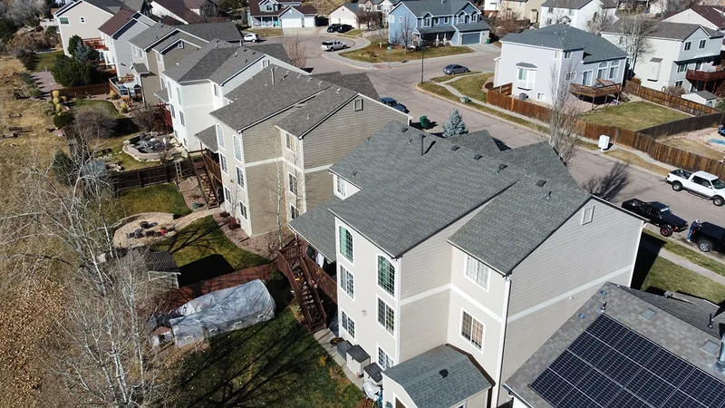
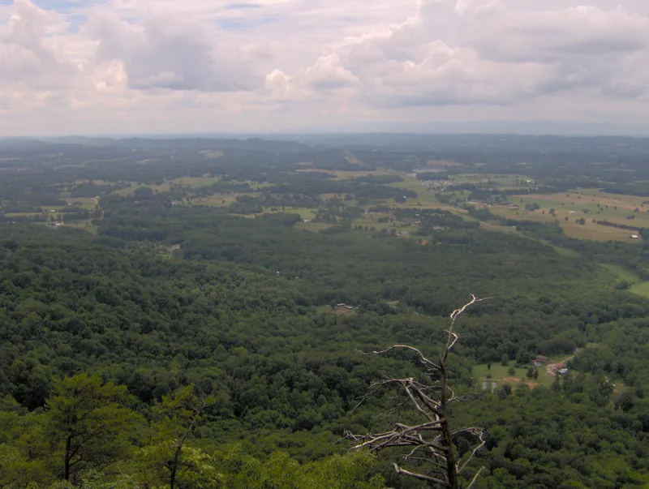

Gutter guards work, as long as the guard matches what falls on your roof. Oaks drop big flat leaves for a few weeks in the fall. Pines drop needles all year. A guard that does fine under one can be a mess under the other.
The four main kinds
Screens are wire or plastic grids that sit over the gutter or snap into it. They're inexpensive and easy to put on yourself. Big oak leaves stay on top and blow off. Pine needles slip into the holes, stand on end and stick there, and then they catch everything else that comes down.
Micro-mesh is a fine stainless steel mesh stretched over a stiff frame. The holes are too small for needles to get through, so it holds up under pines. What it collects is a film on top: pollen, roof grit, the stringy oak tassels that come down in spring. In a hard rain, that film can make water sheet over the front until you brush it off.
Reverse-curve guards are solid covers with a rounded front lip. Water follows the curve around and drops into a slot, and leaves slide off the front. They handle oak leaves well. In a heavy downpour some water can run past the lip, and needles can wedge into the slot.
Foam inserts are long triangular strips that fill the gutter. Water soaks through and leaves sit on top. Over time, seeds and grit work into the foam, it stays damp, and things can sprout in it. They're cheap and easy to slide in, which is most of their appeal.

Which ones work under oaks, and which under pines?
| Guard | Under oaks | Under pines | What you still do |
|---|---|---|---|
| Screen | Fine for big leaves | Needles clog the holes | Pull needles by hand |
| Micro-mesh | Fine | Fine | Brush the top when it films over |
| Reverse-curve | Fine | Needles can wedge in the slot | Clear the slot |
| Foam | Leaves sit on top | Needles mat on top | Replace the foam |
Our opinion: under pines, skip the screens. Go micro-mesh, or go without guards and clean on a schedule. Our post on when to clean gutters under East Tennessee trees lays out that schedule tree by tree.
Heavy rain changes the math
Rain here comes in big doses some days. NOAA's 1991 to 2020 normals for McGhee Tyson Airport show 51.93 inches of precipitation a year, with 14.3 days a year bringing an inch or more (NOAA). Those inch-plus days are the ones that test a guard. A long, steep roof slope sends water into the gutter fast, so pay the most attention to the guard on the gutters below your biggest roof sections.
A guard that lets water overshoot sends that water down beside your foundation. When you're comparing types, ask the installer how water gets in during a downpour, and look at the slot or the mesh yourself before you decide.

A guard doesn't mean you never look at the gutters
Each type still needs a look now and then. Mesh needs a brush. Reverse-curve slots need clearing. And downspouts still clog, guard or no guard, because whatever does get through ends up at the bottom elbow. Our guide to clearing a clogged downspout walks through it.

Ask how it attaches
Some guards clip to the front lip of the gutter. Others slide under the first row of shingles. Ask the installer which kind you're getting, and ask whether lifting or fastening into the shingles matters to your shingle warranty. If the guard comes with its own warranty, ask what it covers and who you'd call to use it.
Check that the gutter itself is worth covering, too. A guard on a sagging or leaking gutter just hides the problem for a while. Our post on how long gutters last covers the signs, and our gutters page and the gutter section of our products page cover the rest.
Questions
Can I put gutter guards on myself?
Screens and some snap-in mesh, yes, from a ladder you're steady on. Guards that slide under the shingles are better left to a roofer, since the shingles have to be lifted without breaking their seal.
Do gutter guards help with pests?
A gutter that stays clear dries out faster after rain, which leaves less standing water and soggy debris sitting up there. Any guard that keeps yours clear helps with that.
Will guards change how often I clean?
They should stretch the time between cleanings. How much depends on the trees over your house and the kind of guard you pick.